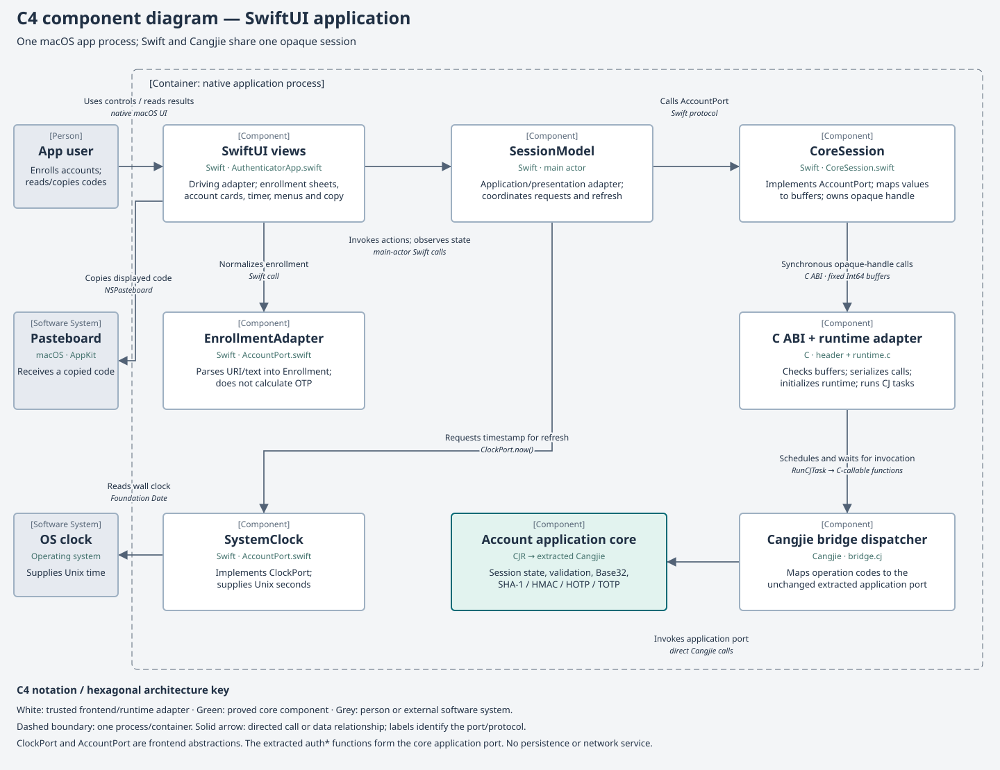

SwiftUI macOS application
Contents
Build and launch
Run commands from the repository root. Use the repository’s Rocq toolchain and pinned Cangjie 1.0.5 compiler. CJC and CANGJIE_HOME override the compiler and SDK locations. On a fresh checkout, build and validate the core first:
make -C example/authenticator build
make -C example/authenticator test
make -C example/authenticator proofsFrontend builds check that the passed proof report, contract manifest, Rocq sources and tested extraction still match. A stale/missing report must be regenerated with the commands above. Do not edit the extracted Cangjie to bypass this gate.
The current build targets Apple Silicon and is tested on macOS 26. SwiftUI requires a complete Xcode installation. Set DEVELOPER_DIR if Xcode is not at /Applications/Xcode.app/Contents/Developer. The pinned Cangjie runtime’s Cangjie.h must be available; use CANGJIE_RUNTIME_INCLUDE if it is not in the sibling runtime source checkout.
make -C example/authenticator run-uiThis builds example/authenticator/build/frontend/Authenticator.app, runs the Swift/C/Cangjie integration test, then opens the app. After building, it can also be opened with:
open example/authenticator/build/frontend/Authenticator.appThe bundle is a development build linked to local SDK/build libraries. Keep those libraries in place; the app is not a relocatable distribution package.
Add an account
Manual Base32 secret
- Choose Add account at the top of the window, or Add your first account in the empty state. Command-N also opens enrollment.
- Keep Manual secret selected.
- Enter the account label, optional issuer and Base32 secret. The secret field is masked.
- Select 6 or 8 digits and enter the period in seconds. The initial values are 6 and 30.
- Choose Add account. On success the sheet closes and the account appears.
TOTP enrollment URI
- Open the same enrollment sheet and choose TOTP URI.
- Paste the URI into its masked field.
- Choose Add account. URI parameters determine its label, issuer, digits and period.
Choose Cancel or press Escape to dismiss an enrollment sheet. Invalid input leaves the sheet open with an error so it can be corrected.
Both apps support SHA-1 TOTP, six or eight digits, periods from 1 to 2,147,483,647 seconds, and at most 16 accounts. Defaults are six digits and 30 seconds. Labels occupy 1–128 UTF-8 bytes; issuers occupy 0–128. Duplicate labels are allowed; IDs distinguish accounts.
Enrollment accepts a manual Base32 secret or an otpauth://totp URI. The core accepts canonical upper/lowercase Base32 with optional padding and no whitespace. URIs accept secret, issuer, algorithm=SHA1, digits and period. Unknown or repeated fields, HOTP URIs, mismatched issuer prefixes, and malformed percent encoding are rejected. Encode spaces as %20; plus signs remain literal.
For a synthetic demonstration use label Demo, issuer Example, Base32 secret GEZDGNBVGY3TQOJQGEZDGNBVGY3TQOJQ, eight digits and a 30-second period. This is a public RFC test secret. The visible code uses the current system time; there is no UI control for setting a fixed timestamp.
Read, copy, rename and remove
- Current code and countdown
- Each card shows issuer, label, zero-padded code and seconds remaining. The timer requests fresh core results once per second. A full period is shown at an exact boundary; a delayed timer tick catches up using a fresh timestamp.
- Copy
- Choose the copy icon on a card. The displayed code is placed on the macOS clipboard; the icon briefly becomes a checkmark. The clipboard is an operating-system resource and is not cleared automatically by this app.
- Rename
- Open the card’s ellipsis menu, choose Rename, edit label and issuer, then choose Save. This preserves its secret, parameters and ID. Cancel or Escape dismisses the sheet.
- Remove
- Open the ellipsis menu and choose Remove. Confirm Remove in the alert. The core clears the account’s slot, and its card disappears.
- End the session
- Quit Authenticator (Command-Q) to destroy its core session. Closing a window is not the same as quitting the app. Reopening the process starts with no accounts. The CLI’s accounts are independent.
Errors and limits
An enrollment or rename error is shown in its sheet. Session errors can appear in the main window. Check the accepted fields above, the account limit of 16, and the machine’s clock. The app does not perform network synchronization. Existing accounts are preserved by rejected core operations.
There is no persistence, sync, QR image scanner, export, push approval or passkey support. Secure fields mask input; they do not establish a physical memory-erasure guarantee. Source-level clearing and the broader trusted boundary are described in proof status.
If building reports stale proof/runtime evidence, rerun the core commands under Build and launch. If runtime startup fails, check that the pinned SDK libraries and built core dylib still exist at their build paths.
Hexagonal architecture

Notation follows the C4 component view and C4 notation guidance: one application container, typed components with responsibilities and technologies, named directed relationships, and a legend. Green identifies the proved core; it does not extend the proof claim to the surrounding adapters.
SwiftUI is a driving adapter around the same CJR core used by the CLI. SessionModel coordinates presentation and application requests through Swift AccountPort and ClockPort protocols. CoreSession implements the account protocol through a C ABI. The Cangjie bridge calls the extracted application port; it does not implement cryptography.
- Driving and presentation adapters
- AuthenticatorApp.swift contains account cards, enrollment/rename sheets, the timer and
SessionModel. The AppKit clipboard action belongs to presentation, outside the core. - Swift ports and enrollment adapter
- AccountPort.swift defines
AccountPort.enroll/accounts/rename/remove/close,ClockPort.now, adapter values,EnrollmentAdapterandSystemClock. The Swift protocols and the CLI interfaces are separate frontend facades over the same core operations. - Swift-to-core adapter
- CoreSession.swift implements
AccountPort, owns the opaque handle, packs requests and decodes secret-free metadata. It requests code and countdown results from the core and pads them for display. - C ABI and runtime adapter
- AuthenticatorBridge.h defines ownership, fixed-width fields, lengths and statuses. runtime.c initializes Cangjie, validates buffer shape, serializes calls, runs a Cangjie scheduler task and waits for completion.
- Cangjie dispatch adapter
- bridge.cj maps operation codes to the extracted application operations. Swift objects and Cangjie runtime objects do not cross the ABI.
- Domain and runtime boundary
- The core owns session state, canonical Base32 decoding, parameter validation and OTP algorithms. It imports no SwiftUI, AppKit, clock or URI implementation. Allocation success and compiler/runtime/extraction remain trusted assumptions.
FFI contract and session lifetime
AuthenticatorApp constructs the main-actor SessionModel, which creates CoreSession and SystemClock. Session creation calls auth_session_create and ultimately authNew. On application termination the model closes its port. Swift close is idempotent; deinitialization also attempts cleanup.
The ABI exposes auth_session_create, auth_session_call and auth_session_destroy. A C owner wraps the core pointer. Request buffers contain 471 Int64 words; list output needs 16 and metadata output needs 260. Each byte occupies one Int64 word. Buffers are borrowed for a synchronous call, never retained. Operation codes are 1 add, 2 list, 3 read, 4 rename, 5 remove, 6 code and 7 remaining. Status -10 denotes a bridge/runtime/shape error; the header documents core statuses.
UI actions and refreshes run on the main actor. CoreSession locks calls against close; the C shim also serializes dispatch. It copies request buffers, schedules with RunCJTask, waits for completion and releases the task handle. Runtime initialization is once per process, and the runtime remains alive until process exit. The C handle must be destroyed exactly once and never reused afterward.
This is a same-process FFI boundary, not an HTTP service or background daemon. The bundle’s Cangjie dylib contains the same extraction as the CLI, with a build-only package header and removal of the generated empty main. No core algorithm is patched.
How a timer refresh reaches the core
- The SwiftUI timer invokes
SessionModel.refresh(). - The model gets current Unix seconds from
ClockPortand callsAccountPort.accounts(at:). CoreSessionlists IDs, reads metadata, and requests code and remaining-time results through the C ABI.- The runtime adapter submits the request to a Cangjie task;
bridge.cjinvokesauthList,authRead,authCodeorauthRemaining. - The core returns results while retaining its own secret state. Swift constructs
Accountpresentation values containing no secret. - The model publishes the new cards. SwiftUI updates the code and ring countdown.
The model has one session. The current WindowGroup shares that model across windows of the same app; distinct executable processes do not share accounts.
Verification and maintenance
make -C example/authenticator ui
make -C example/authenticator frontend-test
make -C example/authenticator docs-checkThe UI build compiles the SwiftUI application and a Swift integration executable. The latter exercises the real Swift→C→Cangjie→CJR-extracted path with shared URI fixtures, RFC codes, leading zeroes, defaults, period boundaries, isolated sessions, capacity/rejection, rename/remove, close and malformed ABI buffers.
The native app builds and stayed running after desktop launch. Visual UI interaction has not been validated: desktop automation timed out. Integration tests validate adapters and core results, not every click, layout or accessibility behavior. See proof status for the proved core coverage and shared architecture for the dependency rule.